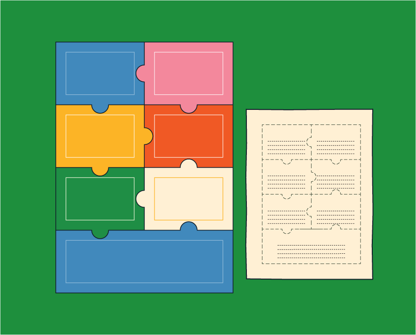

Actividad 3: Historia

Propósito
Construir colectivamente una historia a partir de los personajes creados, organizando sus acciones y acontecimientos en una secuencia narrativa.
Preparación

Tiempo
90 minutos

Materiales
- Ficha de personajes
- Rompecabezas
- Hoja para respuestas
- Hojas para escribir o dibujar
- Recurso web

Antes de comenzar
Tener disponibles
los personajes creados.
Desarrollo
Conozcamos qué es una historia
Explica que una historia se compone de tres partes: inicio, nudo y desenlace. El inicio presenta una situación y a los personajes. El nudo presenta un problema o algo que cambia la situación. El desenlace muestra cómo se resuelve el problema y cómo termina la historia.

Ejemplo de una historia
Inicio:
Una niña se prepara para ir a la escuela.
Nudo:En el camino, se encuentra con una de sus ovejitas que se ha perdido.
Desenlace: Lleva la ovejita a su casa y llega tarde a la escuela.
Recordemos
Invita a los estudiantes a recordar los personajes creados anteriormente y las ideas que surgieron durante las actividades previas. Explica que utilizarán estos elementos para construir una historia.
Preguntas de mediación
- ¿Qué personajes creamos?
- ¿Qué sabemos sobre ellos?
- ¿Qué características tienen?
Armemos
Presenta el rompecabezas y explica que cada pieza corresponde a una pregunta que ayudará a construir la historia. Entrega el rompecabezas y la hoja de respuestas, e indica a los estudiantes que deben armarlo. Una vez armado, lee las preguntas junto con ellos.
Respondamos
Indica que deben escribir sus respuestas y tomar las decisiones en grupo.
Creemos la historia
Proporciona hojas a cada grupo e invita a los estudiantes a representar la historia que construyeron a partir del rompecabezas. Pueden escribir lo que sucede, dibujar las escenas o combinar ambas formas.
Observemos
Asegúrate de que todos los estudiantes tengan oportunidades para aportar ideas, tomar decisiones y participar en la construcción o representación de la historia.
Verifica que la historia siga la estructura de inicio, nudo y desenlace.
Compartamos
Cada grupo presenta su historia a la clase mediante una de estas opciones:
- Mostrar sus dibujos y exponer la historia.
- Hacer una dramatización.
- Leer la historia.